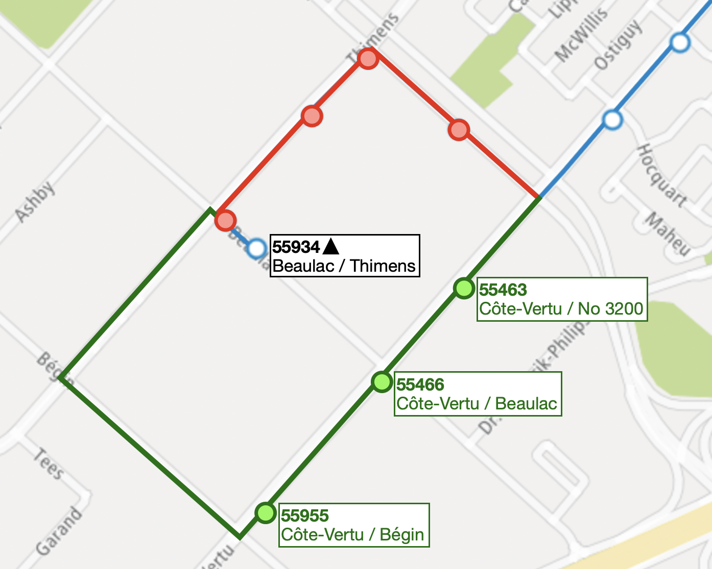

Ici, une modification de la ligne 121, direction Est, est proposée pour combler un vide laissé par les modifications de la ligne 177.
Présentement, la ligne 177-E permet de desservir les commerces et industries sur Côte-Vertu dès la rue Bégin, étant donné que le premier arrêt sur la ligne 121-E sur Côte-Vertu est seulement à l'intersection d'Hocquart. Avec la refonte, il n'y aura plus de service sur ce segment de Côte-Vertu en soirée et en fin de semaine, puisque aucune autre ligne industielle n'est en service.
Il est donc suggéré de légèrement modifier le parcours de la ligne 121 pour combler ce vide. Le point de départ, arrêt 55934 Beaulac / Thimens, ne sera pas modifié. Le trajet dévie en suite via (Gauche) Thimens, (Gauche) Bégin et (Gauche) Côte-Vertu. Les arrêts suivants sont appelés à être ajoutés:
Les arrêts suivants sont appelé à être retirés:
Cela ne devra pas pénaliser la majorité des déplacements, puisque la Place Vertu conserve toujours deux points d'accès (55934 et 55463). En direction Ouest, la vaste majorité de la clientèle utilise l'arrêt 55801 situé en face de l'arrêt 55463 pour accéder à la Place Vertu, et pourront facilement se familiariser avec les nouveaux arrêts. J'estime enfin que cette modification ne devrait pas engendrer aucun coût supplémentaire. Les données recueillies au printemps 2025, lorsque la ligne 121-E effectuait ce détour, montre aucun allongement de temps de parcours, à l'exception des heures de pointe. Les données en pointe ne sont pas représentatives puisque Côte-Vertu a été rétrécie à une seule voie, créant de la congestion routière liée aux travaux.
